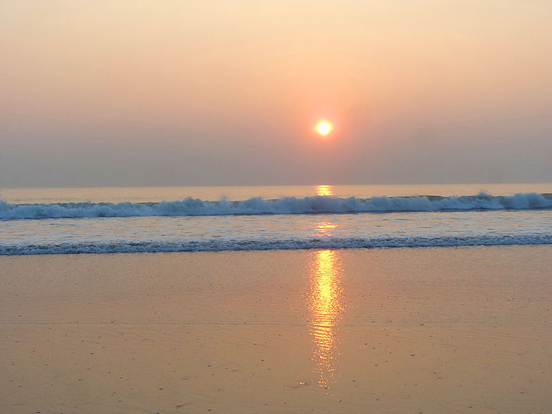
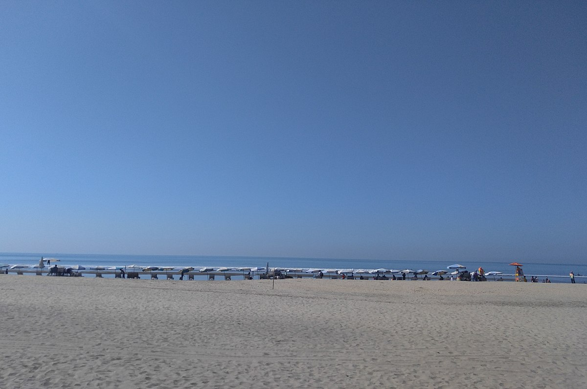

| |
Visit Bangladesh |
| Home | Cities | Sajek | Cox's Bazar | Sylhet | Masjids | Foods |
Cox's Bazar Beach (Bengali: কক্সবাজার সমুদ্র সৈকত), located at Cox's Bazar, Bangladesh, is the longest natural sea beach in the world running 120 kilometres (75 mi) and 5th longest beach after Praia do Cassino of Brazil, Padre Island on the US Gulf Coast, Eighty Mile Beach in Western Australia, and Ninety Mile Beach of Australia. It is the top tourist destination of Bangladesh.
At high tide the beach is 200 metres (660 ft) wide and at low tide it is 400 metres (1,300 ft) wide on average. Quicksand is a danger during ebb tide.
From the early 9th century the greater Chittagong area, including Cox's Bazar, was under the rule of Arakan kings until its conquest by the Mughals in 1666 AD. When the Mughal Prince Shah Shuja was passing through the hilly terrain of the present-day Cox's Bazar on his way to Arakan, he was attracted to its scenic and captivating beauty. He commanded his forces to camp there. His retinue of one thousand palanquins stopped there for some time. A place named Dulahazara, meaning "one thousand palanquins," still exists in the area.
After the Mughals, the place came under the control of the Tipras and the Arakanese, followed by the Portuguese and then the British.
The name Cox's Bazar originated from the name of a British East India Company officer, Captain Hiram Cox, who was appointed as the Superintendent of Palonki (today's Cox's Bazar) outpost. He succeeded Warren Hastings, who became the Governor of Bengal following the British East India Company Act in 1773. Cox embarked upon the task of rehabilitation and settlement of the Arakanese refugees in the area.[9] He rehabilitated many refugees in the area, but died in 1799 before finishing his work. To commemorate him, a market was established and named after him, called Cox's Bazar. Cox's Bazar was first established in 1854 and became a municipality in 1869.
Just after the end of British rule in 1947, Cox's Bazar became part of East Pakistan. Captain Advocate Fazlul Karim, the first post-independence chairman of Cox's Bazar Municipality, established the Tamarisk Forest along the beach. He wanted to attract tourists as well as to protect the beach from tsunamis. He donated much of his father-in-law's and his own lands as sites for constructing a public library and a town hall. Karim was inspired to build Cox's Bazar as a tourist spot after seeing beaches of Bombay and Karachi, and was a resort pioneer in developing Cox's Bazar as a destination. Karim established a maternity hospital, the stadium and the drainage system by procuring grants from the Ford Foundation and Rockefeller Foundation through correspondence. T. H. Matthews, the principal of the Dacca Engineering College (1949~1954), was a friend who had helped him in these fundraising efforts. Engineer Chandi Charan Das was the government civil engineer who worked on all these projects.
Kolatoli Point (Bengali: কলাতলী পয়েন্ট) is an important part of Cox's Bazar beach[10] situated near Dolphine intersection of Cox's Bazar city. Many hotel and restaurant are reside in this area. Buses stop near this point. Before restrictions of government, stoppage of bus was the beach area of Kolatoli. Now all bus stop near Dolphine moure. Sayeman Beach Resort is located on the shores of this stretch of beach. 
Sugandha Point (Bengali: সুগন্ধা পয়েন্ট) situated from the north of Kolatoli point. There is a Burmese Market that is famous in Cox's bazar.There were sea food restaurants but demolished by government. It has fly dining restaurant too.